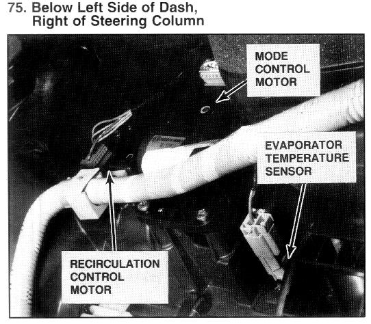

Operation CHARM
: Car repair manuals for everyone.
Home
>>
Acura
>>
1994
>>
Vigor L5-2451cc 2.5L SOHC G25A4 FI
>>
Repair and Diagnosis
>>
Heating and Air Conditioning
>>
Sensors and Switches - HVAC
>>
Evaporator Temperature Sensor / Switch
>>
Locations
Evaporator Temperature Sensor / Switch: Locations
Photo 75 - Evaporator Temperature Sensor/Recirculation Control Motor:

Below Left Side Of Dash, Right Side Of Steering Column